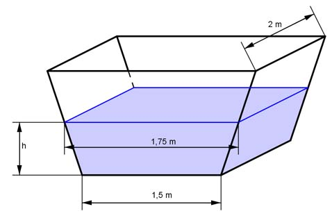

Aufgabe 147 In einem Bottich befinden sich 2 m³ Wasser. Zwei parallel stehende trapezförmige Seitenwände haben einen Abstand von 2 m. Der Boden ist 1,5 m breit, die Flüssigkeitsoberfläche 1,75 m. Wie hoch steht die Flüssigkeit?  Es ist ein trapezförmiges Prisma: 1,5 m + 1,75 m V = ---------------- * h * 2 m 2 2 m³ = 3,25 m² * h |:3,25 m² h = 0,615 m